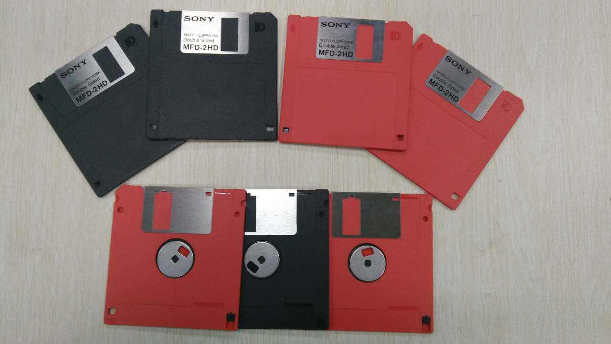
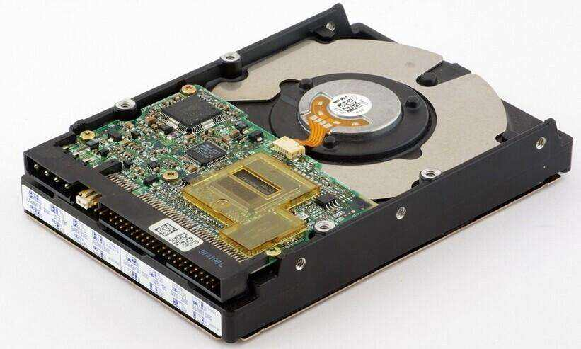

电脑的储存盘可划分为早期的软盘(FD)已被时代所淘汰,与现今的机械硬盘(HDD)与固态硬盘(SSD)。
电脑的储存盘可划分为早期的软盘(FD)已被时代所淘汰,与现今的机械硬盘(HDD)与固态硬盘(SSD)。
软盘（Floppy Disk）是个人计算机（PC）中最早使用的可移介质。软盘的读写是通过软盘驱动器完成的。 软盘驱动器设计能接收可移动式软盘，常用的就是容量为1.44MB的3.5英寸软盘，它曾经盛极一时。之后由于U盘的出现，软盘的应用逐渐衰落直至淘汰
软盘是个人电脑设备中，最早使用可移动备份存储设备。软盘有八寸、五又四分一寸、三寸半之分，分为硬磁区及软磁区。软盘片是覆盖磁性涂料的塑料片，用来储存数据文件。
软盘的读写是通过软盘驱动器完成的。软盘驱动器设计能接收可移动式软盘，常用的就是容量为1.4MB的3.5英寸软盘。软盘存取速度慢，容量也小，但可装可卸、携带方便。
软盘虽是工作中不可缺少的，但同时也很容易出故障。在实际工作时常发生软盘不能读写，甚至连格式化操作也无法进行等。 如果使用不当造成软盘损坏，那么存储在盘上的文件或数据就可能丢失，如果此前盘上重要的文件或数据没有备份的话，就会给工作造成无法挽回的损失。
硬盘有机械硬盘(HDD)和固态硬盘(SSD)之分。机械硬盘即是传统普通硬盘，主要由：盘片，磁头，盘片转轴及控制电机，磁头控制器，数据转换器，接口，缓存等几个部分组成。
磁头可沿盘片的半径方向运动，加上盘片每分钟几千转的高速旋转，磁头就可以定位在盘片的指定位置上进行数据的读写操作。信息通过离磁性表面很近的磁头， 由电磁流来改变极性方式被电磁流写到磁盘上，信息可以通过相反的方式读取。硬盘作为精密设备，尘埃是其大敌，所以进入硬盘的空气必须过滤。
固态硬盘（Solid State Disk或Solid State Drive，简称SSD），又称固态驱动器，是用固态电子存储芯片阵列制成的硬盘。
固态硬盘在接口的规范和定义、功能及使用方法上与普通硬盘的完全相同，在产品外形和尺寸上基本与普通硬盘一致（新兴的U.2，M.2等形式的固态硬盘尺寸和外形与SATA机械硬盘完全不同）。
新一代的固态硬盘普遍采用SATA-2接口、SATA-3接口、SAS接口、MSATA接口、PCI-E接口、M.2接口、CFast接口、SFF-8639接口和NVME/AHCI协议。
基于闪存的固态硬盘是固态硬盘的主要类别，其内部构造十分简单，固态硬盘内主体其实就是一块PCB板，而这块PCB板上最基本的配件就是控制芯片，缓存芯片（部分低端硬盘无缓存芯片）和用于存储数据的闪存芯片。